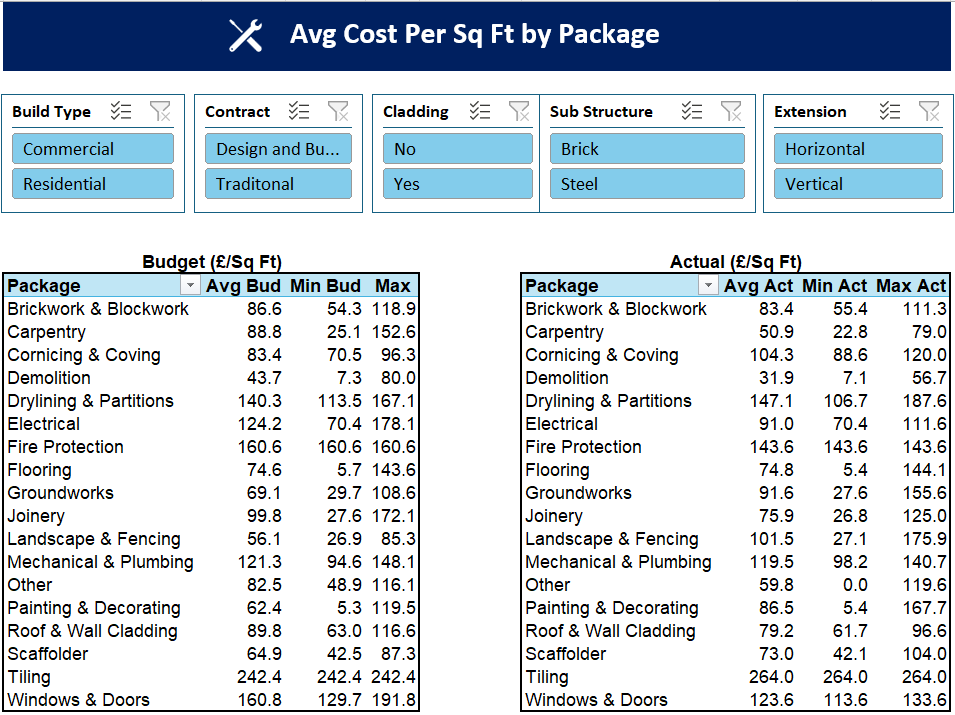

BI & Insight
Hospitality Sales Dashboard
Problem
- No existing performance reporting; the owner relied on raw data and their own feel for how the business was performing.
- Needed a clear view of performance and the drivers behind a year-on-year sales decline.
Solution
- Built an interactive Power BI dashboard covering sales, volume, profitability, pricing and product mix.
- Added YoY comparisons and monthly variance analysis to identify where performance changed.
Key Insights
- 94% of the YoY revenue decline occurred in Q4.
- Sales volume fell faster than revenue, with higher selling prices partially offsetting the decline.
- Espresso Martini mix increased +7.6pp YoY.
- Mojito mix declined -4.8pp YoY.
Tools & Skills

* Figures have been replaced with synthetic data for privacy purposes. The insights shown are consistent with the original findings.
Quarterly Finance Report
Problem
- Quarterly finance updates relied heavily on text and PowerPoint, with limited automation or visualisation.
- Senior management needed a clearer, more visual view of financial performance.
Solution
- Built an automated Excel finance report with a series of visualisations designed around senior management reporting requirements.
- The report is now used each quarter to support senior management financial reviews.
Impact
- Reduced manual effort required to produce quarterly finance reporting.
- Improved the clarity and consistency of financial information presented to senior management.
- Established a repeatable reporting format now used for quarterly financial reviews.
Tools & Skills

* Figures shown use synthetic data for privacy purposes and do not represent actual client financial performance.
Historical Tender Pricing Tool
Problem
- Tender pricing relied heavily on a combination of user memory and manually retrieving historical cost information from individual project files.
- There was no simple way to benchmark budgeted and actual cost per sq ft across comparable historical projects.
Solution
- Built an interactive Excel tool using historical project data to benchmark average, minimum and maximum cost per sq ft by package.
- Added interactive slicers by key project characteristics, enabling users to benchmark package-level costs against the most relevant historical projects and support more accurate pricing of future tenders.
Impact
- Enabled historical project costs to be quickly incorporated into future tender pricing, replacing reliance on memory and manual file searches with a consistent, data-driven approach.
- Reduced the risk of underpricing packages by giving users greater visibility of historical budgeted and actual costs.
Tools & Skills

* Figures shown use synthetic data for privacy purposes and do not represent actual client data.